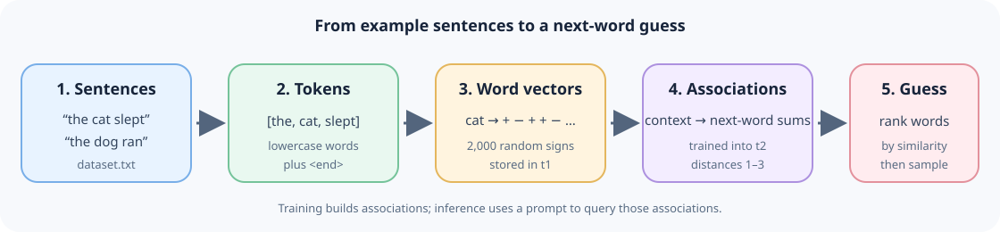
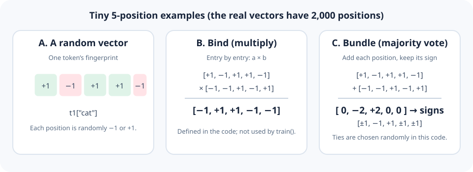
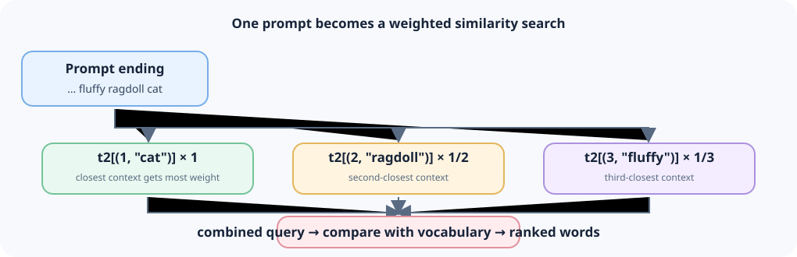

A Beginner’s Guide to a Tiny HDC Text Generator
A friendly, picture-filled tour of hdc_llm.py
Who this is for: someone who knows a little Python but is new to artificial intelligence, language models, and hyperdimensional computing (HDC).
What you will learn: how this small program turns words into number-vectors, learns simple word-to-word patterns from sentences, guesses what word may come next, and checks how often its guesses are right.
A useful expectation: this is an educational toy, not a miniature ChatGPT. It has no internet connection, no pretrained knowledge, and no understanding of what a sentence means. It is a compact experiment in predicting the next word using random vectors and associations.

Contents
- First, the big idea
- Meet the example data
- A few Python ideas we will use
- Words become vectors
- The two kinds of memory
- Training: saving word associations
- Prediction: choosing a likely next word
- Generation: making a short continuation
- Testing the guesses
- What the rest of the file does
- How to run it
- What this model can and cannot do
- Try-it-yourself experiments
- Glossary and final recap
1. First, the big idea
Imagine reading many short sentences about cats and dogs. After seeing “the cat chased the mouse” several times, you might guess that “cat” or “dog” is a possible word after “the.” You do not need to remember every sentence exactly; you can keep a rough summary of what words tended to follow other words.
That is the tiny goal of this program:
- Read sentences from
dataset.txt. - Split each sentence into word-like pieces called tokens.
- Give each distinct token a long, randomly made number-vector.
- Store associations between recent words and the words that followed them.
- Given a prompt, score possible next words and rank them.
- Optionally choose a next word, add it to the prompt, and repeat.
| Everyday idea | Program idea |
|---|---|
| A word’s made-up fingerprint | A hypervector in t1 |
| A notebook of “what followed what” | The association dictionary t2 |
| A short piece of text to continue | The prompt |
| A list of candidate next words | The ranking returned by rank() |
| Repeating a guess to make a sentence | generate() |
The method belongs to a family of ideas called hyperdimensional computing. “Hyperdimensional” sounds intimidating, but here it just means that each word is represented by a vector with many entries. This version uses 2,000 entries per word.
The whole journey in one picture
The key distinction is that the program is not looking up a memorized full sentence. It makes a score for each known word and returns the best-scoring candidates. Because that score is approximate, the result can be odd.
2. Meet the example data
The supplied dataset.txt contains one sentence per non-empty line. Its examples describe cats, dogs, rooms, weather, and actions. For instance, a line might say:
A fluffy ragdoll cat sprawled lazily across the marble kitchen island during breakfast preparation.The program treats the file as a list of independent sentences. It does not read paragraphs or labels. The code sets HANDWRITTEN = 82, and its handwritten_test() function treats the first 82 lines as one test group and the remaining lines as training data.
That number is simply a setting in the supplied script. It does not automatically prove how the sentences were written; it tells us how the script divides them for that particular test.
What is a token?
The tokenize() function lowercases the text, then uses a regular expression to keep groups of letters, apostrophes, and hyphens:
re.findall(r"[a-z'-]+", s.lower())For example:
| Input text | Tokens produced |
|---|---|
The CAT sat. | the, cat, sat |
don't stop | don't, stop |
well-known dog | well-known, dog |
cat's toy! | cat's, toy |
Punctuation and numbers are not kept as separate tokens. Capital letters become lowercase, so Cat and cat are treated as the same word. The program does not know that cat, cats, and kitten are related; they are different tokens.
At the end of each training sentence, the code adds a special token, <end>. That gives it a way to learn that a sentence can stop.
3. A few Python ideas we will use
You only need a small amount of Python to follow the program. Here are the building blocks.
Variables and constants
DIM = 2000
w = 3
END = "<end>"These names hold values. By convention, uppercase names are often used for settings that are intended to stay fixed. In this file, DIM is the vector length and w is the largest context distance used.
Lists and dictionaries
A list keeps ordered items:
words = ["the", "cat", "slept"]A dictionary stores values under keys:
scores = {"cat": 4, "dog": 2}
print(scores["cat"]) # 4This program uses dictionaries for its two memories. A key can even be a tuple, such as (1, "cat").
Loops
A for loop repeats instructions for each item:
for word in words:
print(word)Training uses loops inside loops: over sentences, positions in a sentence, and context distances.
Functions
A function is a named, reusable set of steps:
def greet(name):
return "Hello, " + nameIn this script, tokenize(), train(), rank(), and generate() are functions. Parentheses may contain inputs; return sends a result back.
NumPy arrays
The program uses NumPy (import numpy as np) to work with long lists of numbers efficiently. A NumPy array behaves a little like a list, but it supports operations such as multiplying two arrays entry by entry or calculating a dot product.
4. Words become vectors
A vector is an ordered list of numbers. A tiny example might be:
[1, -1, 1, 1, -1]The actual program uses 2,000 entries, each either -1 or +1. The class method that makes one is:
def vector(self):
return self.rng.choice(np.array([-1, 1], dtype=np.int8), size=self.dim)It chooses randomly for every position. The result is a kind of random fingerprint. The dictionary t1 keeps one such fingerprint for every distinct token, including <end>.
Why so many entries?
In a high-dimensional space, independently random vectors are usually close to perpendicular to each other. In plain language: their patterns tend not to line up much. That makes a word’s vector a useful label that can be combined with other vectors and later compared by similarity.
This does not mean the program knows the meaning of “cat.” The vector is random. Meaningful-looking behavior can only come from patterns the training process stores using these vectors.
A picture of vector operations

The HDC class has three important operations:
| Operation | Beginner description | In this code |
|---|---|---|
vector() | Make a fresh random fingerprint | Used to assign vectors to tokens |
bind(a, b) | Multiply matching entries; often used in HDC to make a combined representation | Defined, but not used by this text-training flow |
bundle(a, b, ...) | Add vectors and keep the sign of each total, like a majority vote | Defined, but not used by this text-training flow |
cos_sim(a, b) | Measure how much two vectors point in the same direction | Defined as a helper; ranking computes an equivalent normalized dot product directly |
For bind(), +1 * +1 and -1 * -1 both produce +1; opposite signs produce -1. For bundle(), each position takes the majority sign. If the signs tie exactly, this implementation randomly picks a sign for that position.
It is important not to assume that every method in a class is used. In this particular script, learning happens by adding destination word-vectors into t2; it does not call bind() or bundle().
5. The two kinds of memory
At the top of the file are two dictionaries:
t1 = {}
t2 = {}Think of them as two different notebooks.
| Name | Key | Value | Role |
|---|---|---|---|
t1 | A token, such as "cat" | Its random 2,000-entry vector | The token-to-vector dictionary |
t2 | A pair such as (1, "cat") | A sum of vectors for words that followed that context | The learned association memory |
The name t1 is not a Python feature; it is just the author’s variable name. Likewise for t2.
There is also vocab, a list of all known tokens, and V, a matrix made by stacking and normalizing their vectors. The matrix is useful because NumPy can score every vocabulary item together instead of comparing each one in a Python loop.
What does (distance, word) mean?
If the recent words are:
... a fluffy ragdoll catthen the three context keys queried for the next word are:
Distance d | Context token | Key checked in t2 |
|---|---|---|
| 1 | cat | (1, "cat") |
| 2 | ragdoll | (2, "ragdoll") |
| 3 | fluffy | (3, "fluffy") |
Distance 1 means the immediately previous token; distance 2 is one token farther back. The word a is too far back for w = 3, so it is ignored for this next-word guess.
6. Training: saving word associations
The training function looks at each token in each sentence. For each current token, it asks: “What words were one, two, or three positions before this?” Then it adds the current token’s vector to the appropriate association entry.
Here is the central part, simplified only by leaving out setup details:
for i in range(1, len(words)):
for d in range(1, w + 1):
if i - d < 0:
break
key = (d, words[i - d])
t2[key] = t2.get(key, 0) + t1[words[i]].astype(np.int32)Let’s translate that line by line:
iis the position of the word we are learning as the next word.dis a context distance: 1, then 2, then 3.words[i - d]looks backward to a context word.keypairs the distance and that context word.t2.get(key, 0)means “use the existing value, or start at zero if this key has not been seen.”- The vector for
words[i]is added to the memory for that context.
A small pretend training example
Suppose a tiny training set has these token sequences:
we like cats <end>
we like dogs <end>At distance 1, the word like is followed by cats once and dogs once. The memory entry for (1, "like") therefore becomes approximately:
t1["cats"] + t1["dogs"]It is not storing the literal string “cats or dogs.” It is storing the sum of two number-vectors. If the next training sentence also says “we like cats,” another copy of t1["cats"] gets added, giving that word more influence.
The real script repeats this for distances 1 through 3. At the beginning of a sentence, it stops looking backward once it reaches before the first token. It never uses the end of one sentence as context for the next sentence.
Where are the vectors prepared?
initiate() goes through the training sentences and creates a vector the first time it sees each token. It then calls build_index(), which:
- copies the token names into
vocab; - stacks their vectors into
V; - normalizes each row of
Vto length 1.
train() then builds t2. In short: initiate the vocabulary first, then train the associations.
7. Prediction: choosing a likely next word
The function inference(prompt) tokenizes the prompt and calls rank(). The ranking process is easier to understand as a recipe:
- Start with a zero vector.
- Look up the context memories for the last one, two, and three prompt tokens.
- Normalize each memory and give farther-away context less weight (
1 / d). - Add those context hints into one query vector.
- Compare the query with every word-vector in
V. - Return the
nwords with the highest similarity scores.
The key calculation for a context distance is:
v = t2.get((d, words[-d]))
total += v / np.linalg.norm(v) / dwords[-1] means the last item in a Python list; words[-2] is the one before it. The division by the vector length normalizes a memory before it is added. The division by d gives distance 1 weight 1, distance 2 weight 1/2, and distance 3 weight 1/3.

Similarity score, without the scary maths
The code uses a normalized dot product, also called cosine similarity. A score closer to 1 means the candidate vector points more in the same direction as the query; a score near 0 means little alignment. Scores can be negative if directions oppose.
| Score (roughly) | Intuition |
|---|---|
1.0 | Very strongly aligned |
0.0 | Little alignment |
-1.0 | Opposite direction |
These are not probabilities. A score of 0.8 does not mean “80% chance.” rank() sorts the scores and returns pairs like ("word", score). If the model has no usable context memory, the query stays zero and rank() returns an empty list.
The vocabulary includes <end>, so ending a sentence can appear as one of the suggestions. inference("A fluffy ragdoll cat") in the main program prints its top three ranked candidates because k = 3.
8. Generation: making a short continuation
generate() takes the ranking and chooses one of its top candidates. Then it appends that token to the prompt and does another round. This repeated loop is called autoregressive generation: each new choice becomes part of the context for the next choice.
prompt → guess a word → add it → guess another word → add it → ...The code chooses from up to top_k ranked candidates (5 by default). It turns their scores into selection weights using an exponential and a setting called temp (temperature):
p = np.exp((np.array(sims) - max(sims)) / temp)
p /= p.sum()In broad terms:
- Lower temperature makes the strongest score dominate more.
- Higher temperature makes lower-ranked candidates more competitive.
- Choosing randomly means two runs may produce different continuations.
The default temperature is 0.1, and n=20 sets a maximum of 20 generation steps. If <end> is selected, generation stops early. If there is no ranked candidate, it also stops.
One small formatting detail: the output is formed by joining tokens with spaces. The original capitalization and punctuation are not restored, so a prompt such as The old cat comes back in lowercase token form.
9. Testing the guesses
The script has a function called evaluate(). For each sentence it hides the next token, asks the model to rank candidates from the preceding tokens, and checks whether the correct next token is present.
It reports two kinds of accuracy:
| Metric | What it asks |
|---|---|
| Top-1 accuracy | Was the correct next token ranked first? |
| Top-5 accuracy | Was the correct next token anywhere in the first five results? |
top-5 should usually be at least as high as top-1, because it gives the model five chances instead of one. These metrics measure next-token prediction on the particular sentences being evaluated; they do not measure understanding or general intelligence.
Two ways the script makes test groups
holdout_test(every=8)uses every eighth dataset line as the test group and the other lines for training. It reports a training score on up to the first 1,000 training sentences and a held-out score on the test group.handwritten_test()trains ondataset[82:]and evaluates ondataset[:82].
A held-out score is more informative than a training score because those test sentences were not used to build the model for that test. Even so, sentences in this dataset share a narrow topic and style. Good results here would not mean the program can predict everyday English broadly.
10. What the rest of the file does
Here is a quick map of the major names in hdc_llm.py:
| Name | Job |
|---|---|
DIM = 2000 | Vector length used by this script |
w = 3 | Maximum number of previous token positions consulted |
k = 3 | Number of suggestions printed in the example inference |
END = "<end>" | Special sentence-ending token |
HANDWRITTEN = 82 | Split point used by handwritten_test() |
HDC | Class that creates vectors and defines HDC utility operations |
tokenize(s) | Lowercases and splits text into word-like tokens |
build_index() | Builds the searchable vocabulary matrix V |
initiate(sentences) | Assigns vectors to tokens and builds V |
train(sentences) | Accumulates next-token associations in t2 |
rank(words, n=10) | Ranks likely next tokens |
inference(prompt) | Convenience wrapper that tokenizes then ranks |
generate(prompt, ...) | Repeatedly samples and appends next tokens |
evaluate(sentences) | Computes top-1 and top-5 next-token accuracy |
fresh(train_set) | Clears memory, makes a new HDC object, initializes, and trains |
memory() | Prints serialized pickle sizes and vocabulary size |
simulations(...) | Repeats training and records each run’s top prediction |
if __name__ == "__main__": | Runs the demo when this file is started directly |
A note on fresh() and randomness
fresh() clears both dictionaries and makes a new HDC(DIM), then initializes and trains from scratch. The constructor’s seed argument is optional, and this script does not pass a seed. As a result, the randomly made vectors can differ between runs. The sampling in generate() also uses NumPy’s separate global random choice. That means exact output is not guaranteed to repeat from run to run.
A note on memory numbers
memory() uses Python’s pickle module to estimate how large the dictionaries are when serialized. Those printed KB values are not an exact measurement of the program’s live RAM use. Python object overhead, the matrix V, and other temporary arrays also use memory.
11. How to run it
Keep hdc_llm.py and dataset.txt in the same directory: the script builds the dataset path relative to its own file.
- Install Python 3 if it is not already installed.
- Open a terminal in the folder containing the two files.
- Install NumPy if needed:
python -m pip install numpy- Run the program:
python hdc_llm.pyThe script trains on the dataset, prints a few ranked guesses, generates three short continuations, prints memory estimates, and runs its evaluation routines. Training and test routines rebuild the model, so the full script does more work than one initial training pass.
If your computer uses python3 rather than python, use python3 -m pip install numpy and python3 hdc_llm.py.
Read the output calmly
- A line about sentence and vocabulary counts is a size summary.
- The printed tuples from inference are candidate words and similarity scores.
- The generated lines are samples, not guaranteed grammatical answers.
- Percentage lines show top-1 and top-5 scores for the named data split.
- Different runs may produce different vectors, candidate rankings, and samples because no fixed random seed is supplied.
12. What this model can and cannot do
| It can… | It cannot… |
|---|---|
| Learn simple local word-following patterns in its small training set | Understand what a cat, dog, or sentence means |
| Rank known vocabulary items as possible next tokens | Suggest words it has never seen as candidates |
| Use up to three previous token positions | Remember a long conversation or long-range grammar |
| Make varied short continuations by sampling | Reliably write factual, coherent, or safe responses |
| Show how vectors and similarity can support an associative memory | Work like a modern transformer-based large language model |
A modern LLM usually has a huge learned neural network, many layers, tokenization designed for large-scale text, and training on vastly more data. This program does not have those things. Calling it hdc_llm.py is the filename chosen for the experiment; it is more precise to call it a tiny HDC-inspired next-token predictor.
Some limitations come directly from the implementation:
- Small context: with
w = 3, a word more than three tokens back is ignored. - Small vocabulary: candidates come from tokens found during
initiate(). - Random representations: a token’s vector has no built-in linguistic meaning.
- No grammar rules: only vector associations are learned.
- No punctuation restoration: punctuation is discarded during tokenization.
- Limited test domain: the dataset is about a narrow set of cat-and-dog scenes.
- Randomness: vectors and generated samples may vary between runs.
These are not mistakes that make the program useless. They make it small enough to inspect and learn from.
13. Try-it-yourself experiments
Make a copy of the code before changing it, so you can compare results.
Experiment A: change the context window
Change w = 3 to w = 1, then to w = 5.
Ask yourself:
- Does using farther context improve top-1 or top-5 on the held-out sentences?
- Does it make the model more sensitive to details?
- Is a higher score on this small test set enough to prove it is better generally?
simulations() also varies the window size and counts which word wins as the top guess across repeated fresh runs. Because each run makes new random vectors, treat those counts as an experiment, not a guarantee.
Experiment B: make the vector smaller or larger
Change DIM = 2000 to a smaller or larger number. Smaller vectors use less space but random vectors may be less distinct; larger vectors take more space and computation. Compare both the printed evaluation and memory() rather than assuming that bigger always means better.
Experiment C: inspect tokenization
Try inputs such as:
print(tokenize("Cats, dogs, and a well-known toy!"))Predict the output before running it. Then test how apostrophes and hyphens are handled.
Experiment D: create a tiny dataset
Make a separate copy of dataset.txt with only a handful of simple sentences. Try repeating one sentence several times and observe whether its word associations become more prominent. Remember that random vector choices can still affect the exact rankings.
Experiment E: make results more repeatable
The HDC constructor accepts a seed. A fixed seed can make its random vectors repeatable if you pass it consistently when creating the HDC object. For full reproducibility, the sampling in generate() also needs a controlled random generator. This is a small code improvement project: trace every place the program draws a random value before deciding what to change.
14. Glossary and final recap
| Word | Plain-language meaning |
|---|---|
| Array | An ordered collection of values, often used for numeric work |
| Autoregressive | Generating one item at a time, using earlier generated items as context |
| Bundle | Add vectors and keep a majority sign at each position |
| Cosine similarity | A score for how much two vectors point in a similar direction |
| Dataset | The examples used to train or test a program |
| Dimension | One position in a vector; this program uses 2,000 per token |
| HDC | Hyperdimensional computing: representing information with long vectors and operations on them |
| Hypervector | A vector with many dimensions, used here as a token fingerprint |
| Inference | Using a trained model to make a prediction |
| Normalize | Rescale a vector so its length is 1, while keeping its direction |
| Prompt | The text provided as a starting point for prediction or generation |
| Similarity | How closely two numeric patterns line up |
| Token | A piece of text produced by the tokenizer; here, usually a word-like string |
| Train | Build the model’s stored patterns from example data |
| Vector | An ordered list of numbers |
The whole lesson in six lines
- The program splits example sentences into tokens.
- It assigns each known token a random vector of 2,000
-1/+1values. - During training, it adds the next token’s vector to memories associated with the previous one, two, and three tokens.
- During inference, it combines the relevant memories into a query vector.
- It compares that query with all known word-vectors and ranks candidates by cosine similarity.
- During generation, it samples a candidate, appends it, and repeats until it reaches a limit or chooses
<end>.
If you understand that loop, you understand the central idea of this little project. The rest of the file is setup, testing, sampling, and reporting.
End of guide.